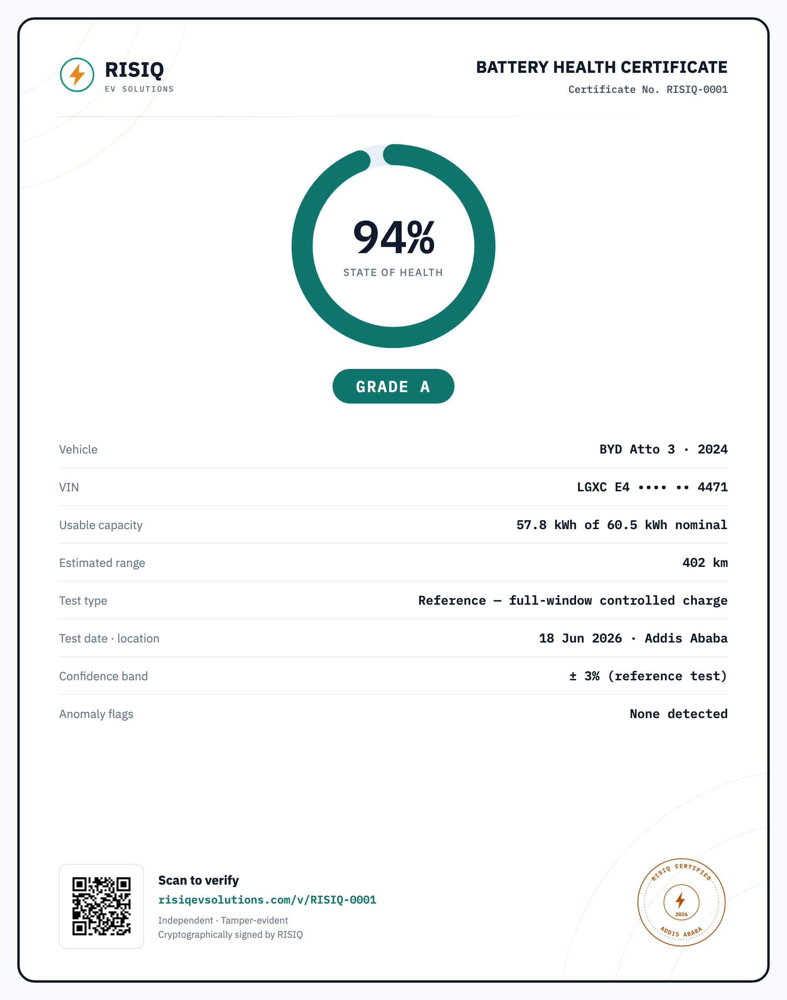
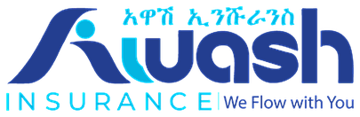
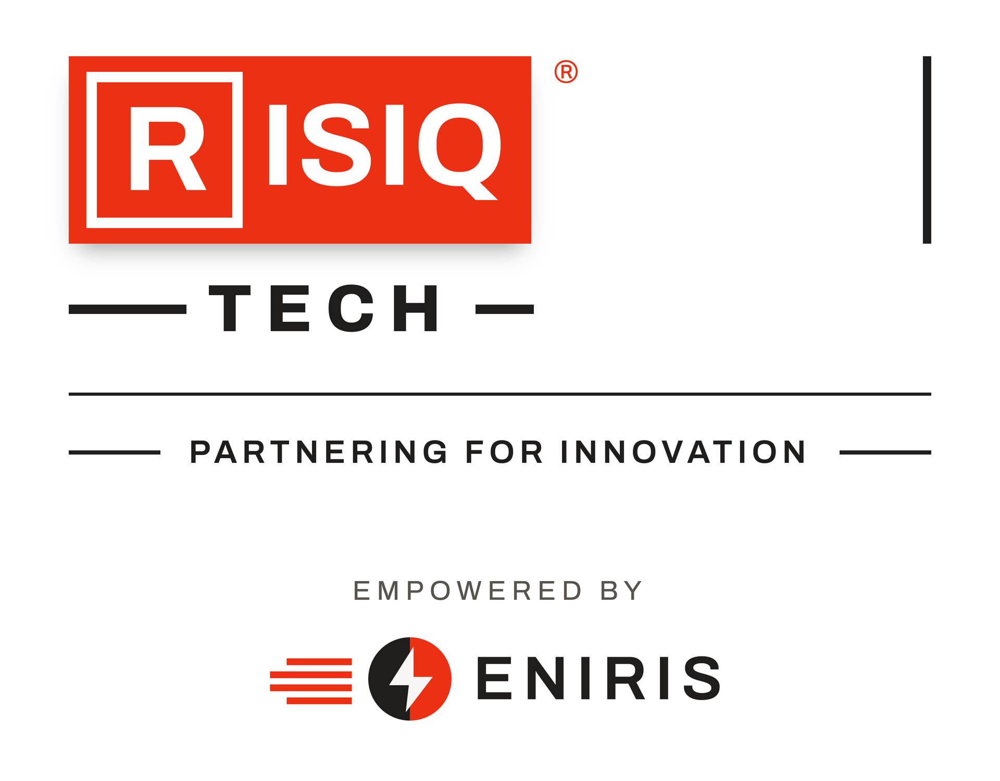

The battery truth behind Ethiopia's electric future.
Independent, engineering-grade EV battery-health certification — built for the locked, imported fleet now filling the streets of Addis Ababa.
A partnership briefing for insurers, importers, banks, government agencies & investors — Addis Ababa.
Part of RISIQ Group, an Ethiopian family business group building since 2010.

Powered by the Grand Ethiopian Renaissance Dam (GERD) — abundant, low-cost, clean hydropower to charge an entire national fleet. Sources: IEA policy database · UNECA — Ethiopia National E-Mobility Strategy 2025–2030 · press reporting, 2024–2026.
The institutions carrying Ethiopia's EV risk.
Every electric vehicle on an Addis road sits on somebody's balance sheet. The founding-cohort invitation is addressed to Ethiopia's leading banks, insurers and micro-finance institutions — find the certificate that answers your question.
Commercial banks
Value the battery at origination and at resale, so a five-year vehicle loan is written against collateral you can actually model — not a number nobody can check.
More informationMicro-finance institutions
Screen the batteries your borrowers depend on to earn. A degraded pack is a missed repayment long before it is a repossession.
More information
Insurers
Price the risk you are already carrying. An independently measured state of health at underwriting, and again at claim, settles disputes before they start.
More informationTwo tests. One certificate everyone can trust.
From a quick dealer-lot check to the accuracy benchmark banks rely on — every result ends in the same signed, verifiable document.
RISIQ Rapid Check
A short, controlled partial-charge measurement, mapped to full State-of-Health by optimization models trained on our own Ethiopian reference dataset. Built for dealer lots, bank valuations and insurance checks.
RISIQ Reference Test
A full charge session measured end-to-end with a revenue-grade calibrated meter — targeting ±3% accuracy. The benchmark every Rapid Check is validated against, for high-stakes decisions.
RISIQ Certificate
A signed, QR-verifiable document with State-of-Health, usable capacity, estimated range and a clear A–D grade — designed to be underwritten, lent against and sold on.
See what's insideFor an EV, the odometer tells you almost nothing.
An electric motor has one moving part — it can outlast the whole car. The battery cannot. It quietly loses capacity to heat, fast-charging and hard use — and the battery is 40–50% of the vehicle's value. So mileage, the number everyone still trusts, is the wrong number.
Same 50,000 km. Same price on paper. Wildly different batteries.
50,000 km on the odometer
Home-charged overnight, kept cool, easy commuting.
50,000 km on the odometer
Fast-charged daily to 100%, parked in the sun, driven hard.
Import yards and regulators feel it too.
Banks, insurers and micro-finance are above — but the battery blind spot reaches further, into the yard where a car is priced and the ministries that decide what's fit for the road.
Importers & Dealers
Grey-market imports, no OEM service centres, no proof of health. Buyers hesitate, disputes follow, good used EVs sit unsold.
See what changes for you →Government Agencies
The Ministry of Trade needs to confirm new imports carry a stable, healthy battery before they reach the market. The Ministry of Transport needs an annual check that ageing batteries are still fit for the road.
See what changes for you →The usual test goes blind here. Ours doesn't.
Reading the car's computer
The common method asks the battery's own computer over the OBD port. But that computer can read optimistically — or be reset to hide damage — and Chinese EVs (BYD, Changan, Jetour) encrypt it. No password, no reading.
Measuring the electricity
RISIQ runs a controlled charge at the car's charging socket and measures the real energy flowing in with a precision meter. Electricity behaves the same in every car — so the test works on any locked, imported EV.
Like a treadmill stress test, not reading an old medical file — the physical measurement reveals the truth the computer can hide.
A battery-health certificate institutions can trust.
Every RISIQ test ends in one thing: a verifiable certificate that turns an invisible battery into a number you can underwrite, lend against, and sell on.
- A measured State-of-Health % — grounded in precision electrical measurement, not a figure self-reported by the car.
- Tamper-evident & signed — cryptographically sealed; edit the PDF and verification breaks.
- QR-verifiable in under 2 seconds — anyone can scan and confirm against a public record.
- Usable capacity, range & grade — a clear A–D grade a buyer or lender understands at a glance.
- Dispute-grade evidence — an independent, timestamped record a bank, insurer or court can rely on in a loan default, claims dispute or resale disagreement.
In Europe, a certified EV sells for hundreds of euros more — and faster. In Ethiopia, this certificate is the missing layer of trust.
Fifteen minutes, at your site.
No OEM cooperation. No workshop downtime. A precision measurement, a signed certificate.
Plug in
Connect the RISIQ rig at your workshop, importer yard or fleet depot.
Measure
A controlled charge; a precision meter reads the real energy going in. Fast test ≈ 15 min.
Compute
The RISIQ cloud derives State-of-Health to ±3% through deep electrical engineering and optimization-based analytics.
Certify
A signed, QR-verified certificate is issued on the spot.
Built for Addis. If the cellular network drops mid-test, the rig stores the data and forwards it when the link returns — a dropped connection never invalidates a result.
A first-mover window — and no one else is in it.
The method needs no manufacturer's permission — so it works on the exact cars flooding Addis. And every certificate deepens a local dataset that no foreign entrant can copy.
How RISIQ compares to the existing players.
Battery diagnostics is a proven category in Europe — AVILOO, TWAICE, Volytica, DEKRA. None of them are built for the market Ethiopia actually has: locked Chinese imports, intermittent connectivity, and institutions that need a certificate, not a dashboard.
| Capability | RISIQ — socket measurement | OBD / BMS-based certifiers | Fleet analytics platforms |
|---|---|---|---|
| Measurement source | Independent precision meter at the charging socket — direct electrical measurement | The vehicle's own battery computer, read over the OBD port | OEM / telematics data feeds from the vehicle |
| Locked Chinese imports (BYD, Changan, Jetour) | Works — no OEM access needed | Frequently blocked by encrypted BMS protocols | Requires manufacturer data cooperation |
| Independent of the car's self-reported figures | Fully — energy is measured, not asked for | Partially — depends on BMS honesty and per-model decoding | No — built on vehicle-reported telemetry |
| Presence in East Africa | Addis Ababa — built for this market | None | None |
| Works with unreliable connectivity | Yes — offline store-and-forward by design | Varies | Cloud-dependent |
| Primary output | Signed, QR-verifiable certificate for banks & insurers | Battery certificate (European used-car market) | Fleet monitoring dashboards & analytics |
| Billing & currency | Locally in birr, via Telebirr | EUR / USD, European channels | Enterprise SaaS contracts |
Category comparison based on publicly available product documentation (AVILOO, TWAICE, Volytica Diagnostics, DEKRA and peers), 2026. Columns describe typical architectures of each category, not any single product.
European energy engineering, applied in Addis.
RISIQ builds its measurement hardware and certification platform in technology partnership with Eniris — a leading European energy-management-system provider whose SmartgridOne platform manages more than 150,000 installations through 500+ vendor-independent hardware integrations.
Reading true delivered energy from equipment nobody controls is exactly the problem Eniris has spent its life solving. RISIQ points it at a new asset class: the locked, imported battery.

Answers before you ask.
Do you need the manufacturer's cooperation, or access to the car's software?
How long does a test take?
What exactly does the certificate show?
Can a certificate be forged or edited?
Which vehicles can you test?
What does it cost, and how do we pay?
Let's run a 90-day certification pilot in Addis.
In 90 days: hundreds of certified vehicles, the first Ethiopian battery dataset, and EV risk you can finally price — with founding partners on preferential terms.
Pilot ready late October 2026 — register your interest via Contact Us